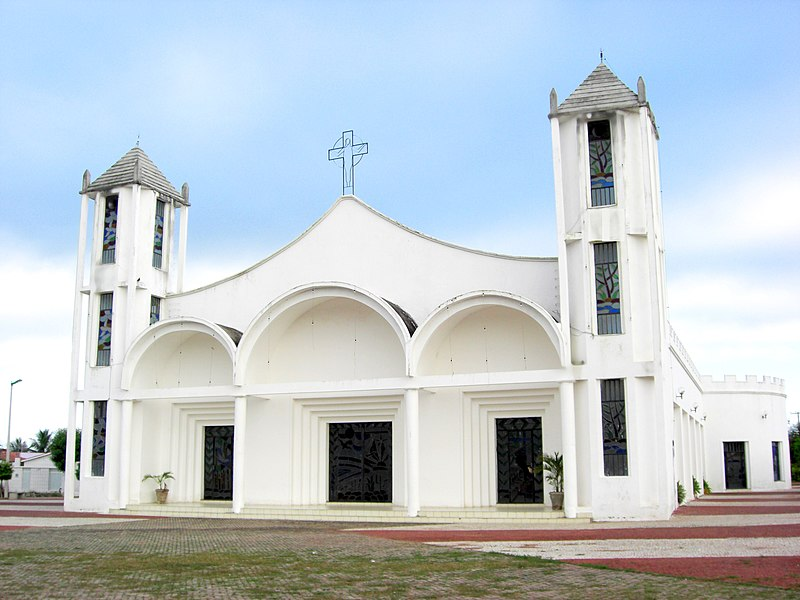

Informações técnicas sobre relevo, população, IDH etc.
| INFORMAÇÕES | |
|---|---|
| Municípios limítrofes | independência , Pedra , Branca , Mombaça , Arneiroz , Parambu e Quiterianópolis |
| Fundação | 3 de maio de 1802 (219 anos) |
| Área total | 4 018,162 km² |
| Clima | semi-árido |
| PIB | R$ 276 781,000 mil |
| IDH | 0,633 — médio |
| INFORMAÇÕES TERRITORIAIS | |
|---|---|
| Número de habitantes | 58 119 hab. |
| Superfície de Tauá |
400 927 hectares
4009,27 km² (1547,99 sq mi) |
| Densidade populacional | 14,7 ha./km² |
| Altitude de Tauá | 389 metros de altitude |
| Coordenadas geográficas decimais |
Latitude:
-6.00028
Longitude: -40.2968 |
| Coordenadas geográficas sexagesimais | Latitude: 6° 0' 1'' Sul , Longitude: 40° 17' 48'' Oeste |
| INFORMAÇÕES DO MUNICÍPIO | |
|---|---|
| Endereço da Prefeitura Municipal de Tauá |
Tauá
Prefeitura de Tauá
Av. Cel. Lourenço Feitosa, 211 - Altos Tauá - CE, 63660-000 Brasil |
| Telefone da prefeitura |
(88) 3437-3281
Internacional: +55 88 3437-3281 |
| Fax |
(88) 3437-2068
internacional: +55 88 3437-2068 |
| Endereço electrónico da prefeitura |
pmtfinancas@usedata.com.br
|
| Site oficial do município | Tauá.ce.gov.br |
| INFORMAÇÕES DO ADMINISTRATIVAS | ||
|---|---|---|
| Prefeito de Tauá | PATRÍCIA PEQUENO COSTA GOMES DE AGUIAR | |
| Partido politico | PSD | |
| INFORMAÇÕES DE TRANSPORTE | |
|---|---|
| Transporte urbano disponível | Rodovias Estaduais e Nacionais |
| Aeroporto |
Aeroporto Regional do Cariri
176.9 km
Aeroporto de Picos
180 km
Aeroporto de Sobral
258.1 km
|
| INFORMAÇÕES DE DISTÂNCIA A OUTRAS CIDADES | ||
|---|---|---|
| São Paulo : 2068 km | Rio de Janeiro : 1907 km | Brasília : 1371 km |
| Salvador : 800 km | Belo Horizonte :1588 km | Manaus : 2213 km |
| Curitiba : 2365 km | Fortaleza : 320 km mais perto | Recife : 640 km |
| Belém : 1042 km | Porto Alegre :2910 km | Guarulhos : 2047 km |
| Campinas : 2017 km | São Luís : 589 km | Goiânia : 1538 km |
| Distância calculada em linha reta! | ||
Conheça mais sobre a história da Tauá.
Com a emancipação do Estado do Ceará, em 1799, surge a necessidade de povoar o sertão, ainda pouco habitado, a partir dessa necessidade são fundadas, a partir dos pequenos núcleos populacionais existentes, as primeiras vilas, esse processo de expansão e instalação de vilas inclui a então Fazenda dos Feitosa nos Inhamuns, que em uma homenagem singela ao Príncipe Regente (que viria a ser D. João VI), a vila instalada em maio de 1802, recebe o nome de São João Príncipe. No dia 2 de dezembro de 1889, o local passou a se chamar São João do Príncipe dos Inhamuns. Recebeu a categoria de cidade em 2 de agosto de 1929.
Saiba mais sobre os melhores lugares e o que fazer em Tauá.
Dentre os poucos pontos turisticos de Viçosa do Ceará o que mais se destaca é o dedicado aos religiosos, trata-se da famigerada igreja da matriz de São José principal referência do município

Veja como chegar nos melhores pontos de Tauá
Essas rotas servem apenas para fins de planejamento. Obras, trânsito intenso, fatores climáticos ou outros eventos podem fazer com que as condições sejam diferentes dos resultados no mapa, por isso é preciso planejar o trajeto levando tudo isso em conta. Obedeça a todas as sinalizações ou avisos que aparecerem em seu trajeto.